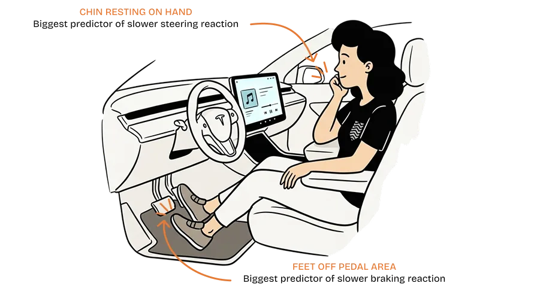

OVERVIEW
Designing the Return
At SAE Level 3, the car drives and the driver is free to watch a film. When conditions change, the car needs the driver back, and research typically allows four to ten seconds for itGold et al., 2013. The production systems I reviewed ask with a single alarm. This project designs the minute before it.
THE PROBLEM
The alarm isn't the problem. The silence before it is.
A takeover request, as it works in production cars today.


Illustrations generated with ChatGPT, then edited by me.
None of the four production systems I compared designs this window, even though the screens to do so already exist. It is a design space current systems leave largely unexplored.
How do you design the sixty seconds before a handover, so the driver arrives ready instead of startled?
Sixty seconds is a working hypothesis, based on the most warning a planned handover can give, such as the end of a mapped highway. Sudden events give far less, and the sequence compresses to fit. The reasoning is in Why these numbers.
MEET THE DRIVER
She isn't careless. The system is working as designed.
She is forty minutes into her commute in a certified L3 zone, reclined, feet off the pedals and absorbed in the center screen. Each of those details has a measurable cost at takeover.

6%
Share of time spent looking at the road during a screen task in autonomous mode.
van der Heiden et al., CHI 2017
Posture
Feet away from the pedals had the largest effect on braking reaction time.
Zhao et al., 2024
Duration
Longer periods in autonomous mode led to poorer takeover performance.
Heliyon, 2024

In the systems I reviewed, the alert is the same whether the driver is ninety seconds or thirty minutes into autonomous mode. The research suggests these are different recovery problems.
WHAT I FOUND
A decade of takeover research, and four production systems
Time spent looking at the road during a screen taskvan der Heiden et al., CHI 2017
A single quiet cue, twenty seconds early, doubled that figure and lowered heart rate when the real alert arrived. This finding became the foundation of the project.
WHY THIS MATTERED
I expected the answer to be a stronger alarm. The research kept pointing earlier. The alert may be doing its job, but it only covers the last few seconds of a process that could start a minute before.
THREE GAPS
Not a broken component. A broken assumption.
GAP 01
The silent system
In the systems I reviewed, the alarm is the first thing the car communicates about the handover.
GAP 02
No vocabulary for "less sure"
Red and loud exist for danger. None of the systems I reviewed communicates a car that is 70% confident rather than 95%.

GAP 03
The undesigned sixty seconds
Attention, posture and focus could all recover before the alert. Instead it's empty.
FROM INSIGHT TO SYSTEM
What I tried first, and killed
Louder alert
Still one shock, still no warning.
Permanent dashboard
A live confidence score competed with the entertainment L3 is meant to allow.
Five states in sequence
Each state has one job, from an ambient cue to confirming the takeover.
THE FIVE STATES
A sequence, not a switch
The same drive with the proposed sequence. State 01, Autonomous Mode, is the moment in the first panel above. From there, the car begins communicating sixty seconds before the handover.


Illustrations generated with ChatGPT, then edited by me.
The center display at each state. Keep scrolling to move through the sequence.
T-∞ to T-60s
01Autonomous Mode
The full dashboard: map, music and car status. A calm teal accent, no warning cue.
T-60s to T-30s
02Awareness Ramp
The lower cards give way to a live road view, with a soft amber glow on the horizon. Music keeps playing.
T-30s to T-10s
03Reengagement
Map and music step back. The road view fills the screen in amber, and a countdown begins.
T-10s to T0
04Handover Alert
Only the road remains, framed in red, with "Take over now" and the last few seconds.
T+0 onward
05Takeover Confirm
A teal frame and "You have control". The dashboard returns, dimmed, behind the road.
WHY THESE NUMBERS
Sixty seconds is a ceiling, not a rule
The warning a car can give depends on what ends autonomy, so the sequence adapts to each trigger.
4-10s
Takeover budget used in research
Gold et al., 2013
20s
Pre alert that doubled attention to the road
van der Heiden et al., CHI 2017
~27s
How long cognitive distraction lingers
Strayer et al., 2015
60s
Proposed upper bound, still to be tested
Trigger analysis, in the paper
WHAT I DIDN'T SOLVE
A clean win would be a lie
MOST EFFECTIVE ≠ MOST LIKED
The faster pre alert brought attention back to the road nearly twice as fast, yet half the participants preferred the slower one because it let them finish their task firstvan der Heiden et al., CHI 2017. My timing has to be tested for both.
STILL A NUDGE WITHOUT CONSENT
Dimming someone's film without asking isn't neutral. Drivers deserve a say in the pacing, without it becoming a safety loophole.
READING SOMEONE'S STATE IS NOT SMALL
Heart rate and eye sensing would make this smarter, but it's biometric data under GDPR. Not mine to greenlight alone.
REFLECTION & NEXT
Where this stands
This proposal is grounded in published research, mostly from driving simulators. It has not yet been tested with drivers.
Validate the sixty second window
Compare Ramp onsets of 30, 45, 60 and 90 seconds in a driving simulator.
Pressure test the color language
Confirm amber and red stay legible on a bright dashboard in daylight.
User test the sequence
Test whether drivers read the Awareness Ramp as a nudge or an interruption.
Sitting next to engineers at Valeo and Renault changed how I think about this work. The constraints didn't make it less creative. They made it matter more.
Key sources (5)
- Gold et al. (2013). Take over! How long does it take to get the driver back into the loop? HFES Annual Meeting.
- van der Heiden, Iqbal & Janssen (2017). Priming drivers before handover in semi-autonomous cars. CHI 2017. doi
- Strayer et al. (2015). Measuring cognitive distraction in the automobile III. AAA Foundation for Traffic Safety.
- Zhao et al. (2024). Effects of non-driving related postures on takeover performance. Accident Analysis and Prevention. doi
- Getting back in the loop: does autonomous driving duration affect takeover performance? (2024). Heliyon. doi
All 38 references are in the paper →
धन्यवाद…